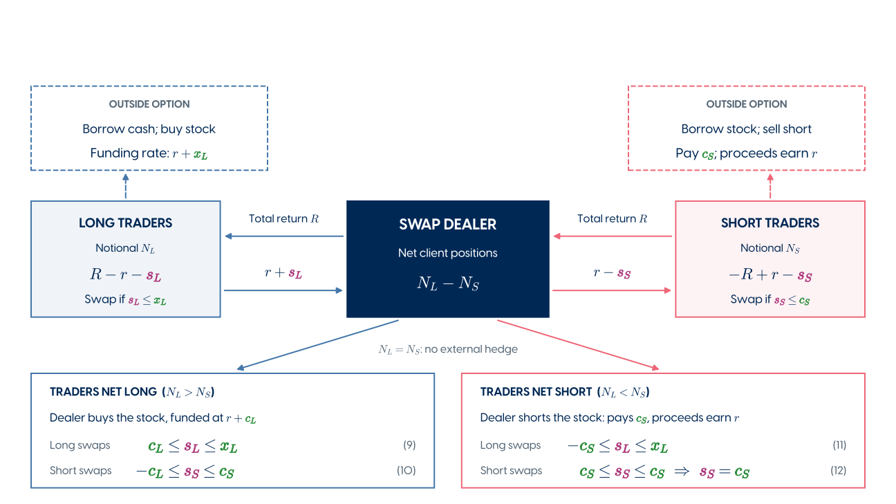
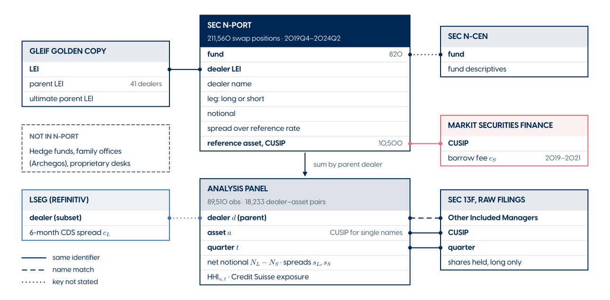

Discussion 2026 Annual Meeting of the Northern Finance Association
Piotr Orłowski
HEC Montréal

| Idea | Result |
|---|---|
| Spread sensitivity | In stocks intermediated by many dealers, spreads track the dealer’s funding cost under net long demand and the stock’s borrowing cost under net short demand. |
| Spreads and net exposure | Spreads show a significant discontinuity where net exposure changes sign. |
| Internal hedging | Dealers quote lower spreads to new counterparties when the trade offsets their net exposure. |
| Marginal hedging | Dealers’ 13F stock holdings track their residual positions. |
| Competition |
|
Caveat. These are cross-sectional patterns that explain little of the observed variation in spreads. Where R2s are high, they come from fixed effects; within R2s would show how much the mechanism itself explains.

2016 Rules adopted
Late 2019 Public XML filings on EDGAR
2020 Smaller fund groups enter
July 2024 Easy to download complete history
Before:
Now: standardized contracts: financing terms, notional, underlying, dealer.
| Size | Scope | |
|---|---|---|
| N-PORT | $0.38tn | Equity swap notional in Q2 2026 |
| SEC | $3.33tn | Equity TRS with a US connection, excl. broad indices |
| BIS | $6.30tn | Global equity swap and fwd market |
SEC and BIS: December 2025.
N-PORT / SEC = 11.3%, N-PORT / BIS = 6.0%.
Missing hedge funds, family offices and prop desks → how representative is dealer net exposure?
Missing hedge funds, family offices and prop desks → why does this even work?!
Sources: SEC reform, reporting timeline, bulk-data launch; own N-PORT calculation; SEC Table D.1; BIS.
Could registered funds trade with separate dealer books?
N-PORT might capture the relevant inventory.
| In support | Against |
|---|---|
| Banks separate trading desks by product and geography. | No established separation between registered funds and hedge funds. |
| Desk-specific constraints could shape quotes. | Shared inventory and internal funding connect desks. |
| Invesco describes hedge-fund demand improving ETF swap pricing.* |
The central concern is about the sign of net demand.
*Invesco example: European synthetic ETFs / China exposure. Sources: CS, UBS, BofA, Invesco, p. 4.
Single stocks are 89% of positions but 22% of gross notional; indices and baskets more economically important at 71%.
| Underlying | Positions | Gross | Fund long | Fund short | Unresolved | Net demand |
|---|---|---|---|---|---|---|
| Indices / baskets | 2,869 | 269.0 | 225.2 | 35.1 | 8.6 | 190.0 |
| Other ETFs | 617 | 22.9 | 18.9 | 3.6 | 0.5 | 15.3 |
| Single-name stocks | 29,509 | 83.8 | 65.1 | 11.3 | 7.4 | 53.8 |
| Unclassified / other | 97 | 0.9 | 0.2 | 0.2 | 0.5 | 0.0 |
| All | 33,092 | 376.5 | 309.3 | 50.2 | 17.0 | 259.1 |
Notional in $bn. Data from 2026 Q2, 1,120 funds reporting between February and April 2026. Data source: SEC N-PORT data, Form N-PORT; own calculation.
Benchmark index swaps can be hedged with futures (dealer chars don’t matter)
Additional tests with futures-hedgeable indices
Additional tests
Stock returns have common factors: \[ R = bF + \varepsilon \]
Honkanen, equation (4): single-asset inventory cost Proposed extension: penalize remaining portfolio risk
\(O(H_L,H_S)\) \(O(\mathbf H_L,\mathbf H_S)\) \(=\Pi-\) \(\gamma P^2\) \(\frac{\rho}{2}\underbrace{\mathbf P^\top\Sigma\mathbf P}_{\mkern-36mu\text{portfolio variance}\mkern-36mu}\)
\(P\): remaining exposure after hedging \(\mathbf P\): stacked dealer positions for every stock; \(\Sigma\): return covariance; \(\rho\): risk aversion
Small comments
Whose sign is “net exposure”? \(N_L - N_S\) is signed from the clients’ side (Table 1). The dealer’s swap book has the opposite sign (eq. 3).
In many places, the language of the paper is ambiguous: statements like “dealer has positive exposure” refer to “dealer supplies traders who are net long, hence the dealer is net short.”
Dealer “faces” net long demand seems better. Referring to demand seems best.
Typos